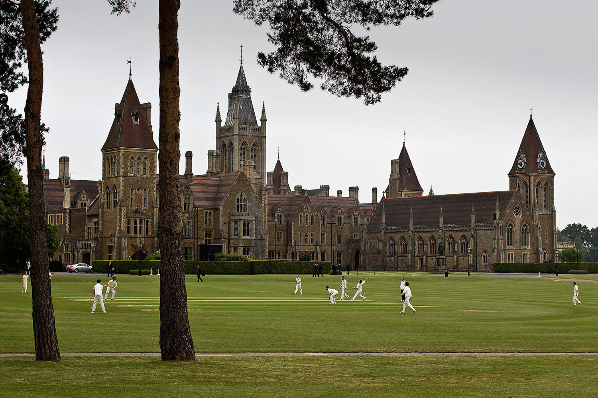
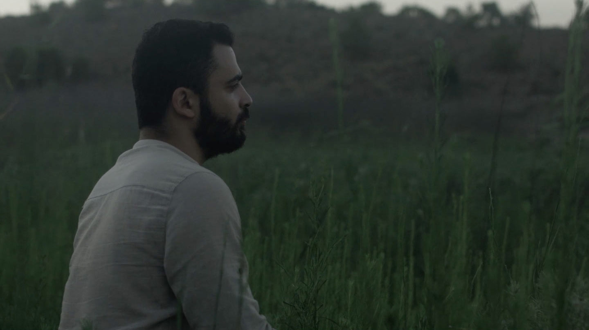

Public
2016 // Short - Drama

Details
- Currently being developed through the Scottish Film Talent Network's 'New Talent Shorts' scheme.
- Outcome of the In_Script short film script development residency 2015 in Lithuania - Winner of the "Promising Screenwriter" award.
Set in a prestigious all-boys boarding school, Public tells the story of Charlie; a promising athlete and top student who is forced to choose between his reputation and the boy that he loves.
Photograph © flickr user gratpik. Licensed under Creative Commons (CC BY-NC-ND 2.0)
Haftasonu (Weekend)
2016 // Short - Drama

Details
- A collaboration with Cypriot filmmaker Talat Gokdemir.
Following his father’s death, Hasan returns to Cyprus after many years. He spends time in his childhood village with his grieving mother and childhood girlfriend. The pressure to attend the funeral pushes Hasan to confront his past and to search for reconciliation, not only with his family and home but also with himself.
Copyright 2016 Alasdair Bayne.